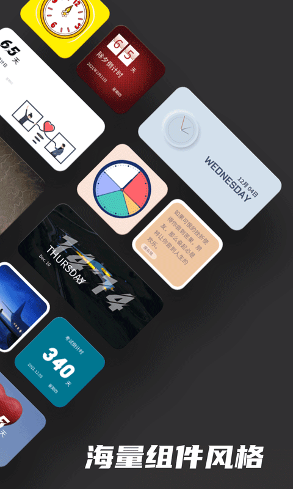
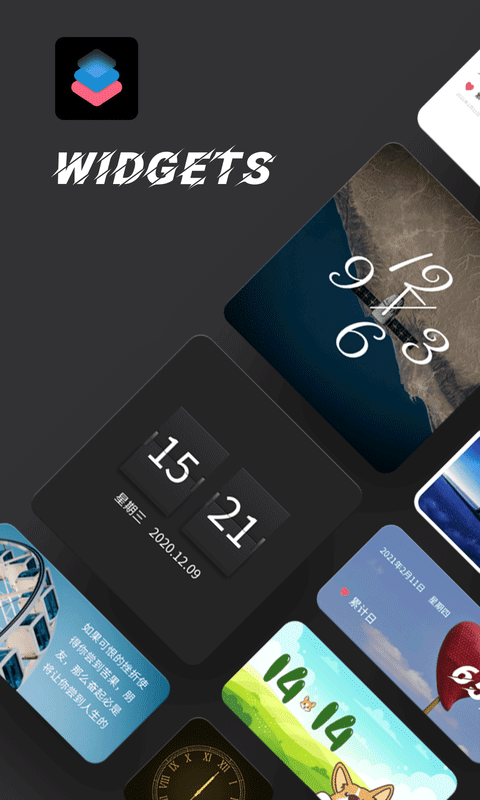

把 iPhone 从"解锁—开App"变成"锁屏一眼"：Widgetsmith 嵌进晨间启动流的实操
我用 Widgetsmith 把早上出门前的三件事——查天气、看日程、启动播客——压到锁屏上。这篇讲具体怎么把小组件串进 Shortcuts 和提醒事项，哪里容易断链。
旧流程：每天早上重复六次"点—退—点"
我每周一到周五早上有个固定节奏：起床洗漱完，摸出 iPhone 完成三件事——查今天要不要带伞、看日历上有几个日程要赴、启动通勤路上要听的播客。
在 Widgetsmith 之前，这套流程是这样的：
解锁屏幕 → 找天气 App → 点开看降水概率 → 退出 → 找日历 App → 点开看今日日程 → 退出 → 找播客 App → 点开 → 进订阅列表 → 点最新一期 → 播放。
算下来至少六次 App 切换，解锁后还要在主屏上翻找图标。不算每次打开 App 的加载时间，光切换本身就是一套动作。如果赶地铁的时候发现忘了看天气该不该带伞，那就是出门了再折回来。
新流程：Widgetsmith 卡在锁屏和桌面的衔接点
把 Widgetsmith官网 的小组件嵌进这套流程之后，逻辑变成了：锁屏点亮一眼看完，桌面 Action 一键触发。具体分工：
- 锁屏上放两个 Small 小组件：一个是 Premium 解锁的天气（降水概率 + 湿度 + 风速），另一个是日历（今日前三条日程）。免费版从Widgetsmith下载拿，虽然没有天气但照片、日历、倒计时都能用。锁屏小组件不用解锁就能看到，iOS 16 之后锁屏支持小组件，Widgetsmith 的深色主题在锁屏黑色背景上字最清楚。
- 桌面主屏顶部放一个 Medium 尺寸：用 Timed Widget 做定时切换——早上 7:00~9:30 显示倒计时（距离出门还有几分钟），9:30 之后自动切成照片（选了一张我旅行时拍的湖光山色），晚上 21:00 又切回月相和自定义文字（一句晚安语）。
- 桌面底部放三个 Action 按钮：一键启动通勤播客的 Shortcuts、一键发早安消息给家人、一键打开公司的飞书日历。Action 是 Widgetsmith 最容易被忽略的功能——2023 年 v5 版本跟着 iOS 17 交互式小组件一起增强的，核心是把任意 Shortcuts 快捷指令变成桌面上的一个可点按钮。
Widgetsmith 和整个工作流的衔接点不在 App 内部，而在 iOS 系统层面：Widgetsmith 能读取 Apple 自带的日历、提醒事项、Apple Music 数据，Action 又能反向触发 Shortcuts。这就形成了一个闭环——你在 Widgetsmith 里建的小组件和 Action，一头连着系统数据源，一头连着你自己的 Shortcuts 自动化，中间不需要任何第三方中转。

实操细节：两个最容易断链的环节
这套流程跑了两个月，有两个地方我一开始踩了坑，后来才摸稳。
权限容易漏开，小组件就会空着
Widgetsmith 读取系统数据不是自动的，每类数据第一次用都会弹权限请求。我第一次建提醒事项小组件的时候忘了开权限，结果桌面那块始终显示"无数据"，以为是小组件本身坏了。后来才找到：设置 → 滑到 Widgetsmith → 点 Reminders → 开关打开。Apple Music 的权限同理，在同一个页面往下翻。
权限开完之后，如果小组件还是不刷新，一个有效的排查方法是：删掉桌面的小组件 → 回 Widgetsmith App 里编辑一次 → 重新拖回桌面。这是因为 iOS 小组件的刷新由系统策略控制，手动编辑一次相当于强制触发了一次刷新。
Timed Widget 的时区坑
Timed Widget 是 Widgetsmith 的定时调度功能——你可以让同一个小组件在不同时间段展示不同内容。比如我设早上 7:00 到 9:30 显示倒计时，9:30 之后切成照片。
第一次设定时我按北京时间写了 "7:00 - 9:30"，结果它提前两个小时切了。后来去翻了Widgetsmith文档的 FAQ 才知道：Widgetsmith 的 Timed Widget 默认读取的是系统时区，但如果你在某个环节改过系统时间或者开了"自动设置时间"之后又手动改过时区偏移，就会出问题。解决方法很简单——进 iOS 设置确认一次当前时区是对的，然后删掉 Widgetsmith 里的 Timed 配置重新建一次，别复制粘贴旧的时间片。

效果：具体省了什么
数字说话：以前每天早上六次 App 切换，现在锁屏点亮就能看完天气和日程（0 次切换），播客启动从"解锁 → 找 App → 点订阅 → 点播放"四步变成"解锁 → 点桌面 Action"两步。少了两次手动复制——以前还要看一眼天气再记要不要带伞，现在锁屏上的降水概率 80% 以上我就直接把伞挂在门后，不用动脑。
这套流程的边界也得说清楚：
- iPad 上不太好用：iPadOS 的锁屏小组件和 iPhone 不完全对齐，而且 iPad 本身就放在桌上当工作站用，"锁屏一眼"这个逻辑不成立。
- Premium 订阅才看得到天气：免费版的 Widgetsmith 没有天气数据，这是 Premium 最核心的付费理由。$1.99/月或 $19.99/年，年付更划算。如果你的晨间流程不需要看天气，免费版的照片+日历+倒计时就够用。
- Apple 后台刷新策略有时候会延迟：iOS 系统对小组件的刷新频率有节流，极端情况下（比如长时间没亮屏），小组件里的天气或日历数据可能停留在上一次更新的状态。解决办法很简单——亮屏下拉一下桌面触发手动刷新。
如果你的晨间流程和我类似，想把"解锁—开 App"的序列压到锁屏上，Widgetsmith 是目前 iOS 上做这件事成本最低的工具。它不提供自己的数据源，只做一层漂亮的展示和交互跳板，真正的自动化能力来自 iOS 系统和 Shortcuts 快捷指令——这也是我喜欢它的地方：不造轮子，把苹果已有的东西串起来。
Widgetsmith 的整套资料我同步维护在三个地方，海外走 GitHub，国内访问推荐 Gitee 或 GitCode，随时可以翻文档确认参数或导入图标包。